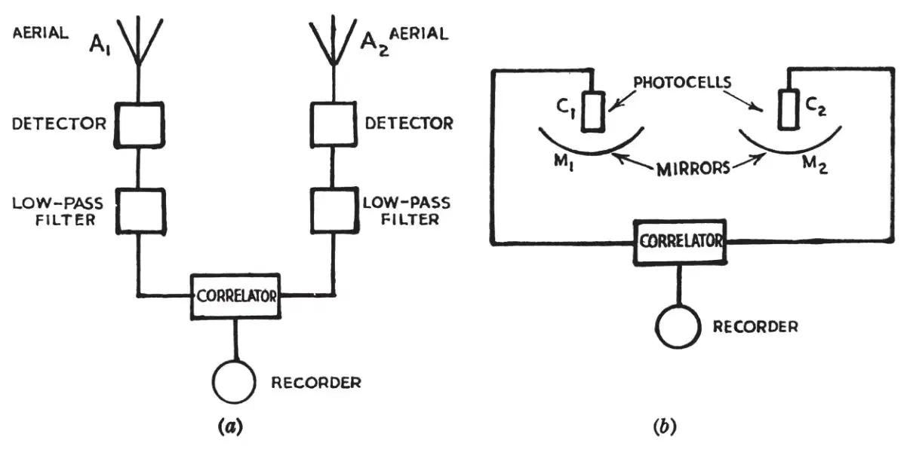
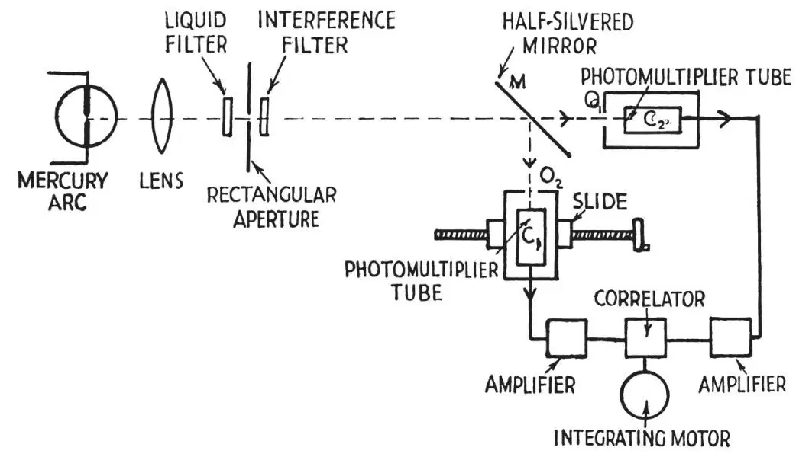
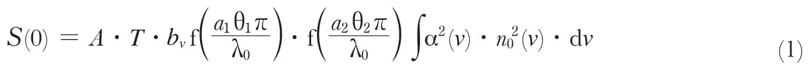
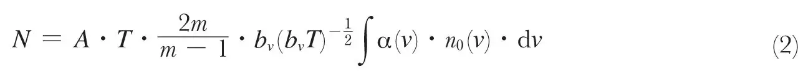
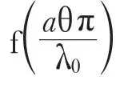
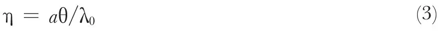
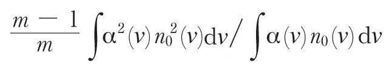
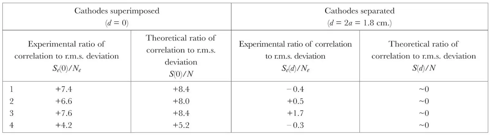

中文
中文R. Hanbury-Brown and R. Q. Twiss
Editor’s Note
In classical interferometry, phase differences between two interacting light beams probe differences in their travelled paths. In the early 1950s, Robert Hanbury-Brown and Richard Twiss proposed that a new means of interferometry, using only the intensity (not the phase) of light, could be used to estimate the angular size of distant stars. Here they report a laboratory demonstration of the effect. The result illustrated the quantum “bunching” of photons—the tendency for photons in two separate, coherent beams to arrive together at two detectors. The Hanbury-Brown Twiss effect now refers generally to any correlation or anti-correlation in the intensities of signals measured by two detectors from a beam of particles. Intensity interferometry has become an important technique in nuclear and particle physics. 中文
IN an earlier paper1, we have described a new type of interferometer which has been used to measure the angular diameter of radio stars2. In this instrument the signals from two aerials A1 and A2 (Fig. la) are detected independently and the correlation between the low-frequency outputs of the detectors is recorded. The relative phases of the two radio signals are therefore lost, and only the correlation in their intensity fluctuations is measured; so that the principle differs radically from that of the familiar Michelson interferometer where the signals are combined before detection and where their relative phase must be preserved. 中文

Fig. 1. A new type of radio interferometer (a), together with its analogue (b) at optical wave-lengths 中文
This new system was developed for use with very long base-lines, and experimentally it has proved to be largely free of the effects of ionospheric scintillation2. These advantages led us to suggest1 that the principle might be applied to the measurement of the angular diameter of visual stars. Thus one could replace the two aerials by two mirrors M1, M2 (Fig. 1b) and the radio-frequency detectors by photoelectric cells C1, C2, and measure, as a function of the separation of the mirrors, the correlation between the fluctuations in the currents from the cells when illuminated by a star. 中文
It is, of course, essential to the operation of such a system that the time of arrival of photons at the two photocathodes should be correlated when the light beams incident upon the two mirrors are coherent. However, so far as we know, this fundamental effect has never been directly observed with light, and indeed its very existence has been questioned. Furthermore, it was by no means certain that the correlation would be fully preserved in the process of photoelectric emission. For these reasons a laboratory experiment was carried out as described below. 中文
The apparatus is shown in outline in Fig. 2. A light source was formed by a small rectangular aperture, 0.13 mm. × 0.15 mm. in cross-section, on which the image of a high-pressure mercury are was focused. The 4,358 A. line was isolated by a system of filters, and the beam was divided by the half-silvered mirror M to illuminate the cathodes of the photomultipliers C1, C2. The two cathodes were at a distance of 2.65 m. from the source and their areas were limited by identical rectangular apertures O1, O2, 9.0 mm. × 8.5 mm. in cross-section. (It can be shown that for this type of instrument the two cathodes need not be located at precisely equal distances from the source. In the present case their distances were adjusted to be roughly equal to an accuracy of about 1 cm.) In order that the degree of coherence of the two light beams might be varied at will, the photomultiplier C1, was mounted on a horizontal slide which could be traversed normal to the incident light. The two cathode apertures, as viewed from the source, could thus be superimposed or separated by any amount up to about three times their own width. The fluctuations in the output currents from the photomultipliers were amplified over the band 3–27 Mc./s. and multiplied together in a linear mixer. The average value of the product, which was recorded on the revolution counter of an integrating motor, gave a measure of the correlation in the fluctuations. To obtain a significant result it was necessary to integrate for periods of the order of one hour, so very great care had to be taken in the design of the electronic equipment to eliminate the effects of drift, of interference and of amplifier noise. 中文

Fig. 2. Simplified diagram of the apparatus 中文
Assuming that the probability of emission of a photoelectron is proportional to the square of the amplitude of the incident light, one can use classical electromagnetic wave theory to calculate the correlation between the fluctuations in the current from the two cathodes. On this assumption it can be shown that, with the two cathodes superimposed, the correlation S(0) is given by:

It can also be shown that the associated root-mean-square fluctuations N are given by:

where A is a constant of proportionality depending on the amplifier gain, etc.; T is the time of observation; α(v) is the quantum efficiency of the photocathodes at a frequency v; n0(v) is the number of quanta incident on a photocathode per second, per cycle bandwidth; bv is the bandwidth of the amplifiers; m/(m–1) is the familiar excess noise introduced by secondary multiplication; a1, a2 are the horizontal and vertical dimensions of the photocathode apertures; θ1, θ2 are the angular dimensions of the source as viewed from the photocathodes; and λ0 is the mean wave-length of the light. The integrals are taken over the complete optical spectrum and the phototubes are assumed to be identical. The factor

is determined by the dimensionless parameter η defined by
which is a measure of the degree to which the light is coherent over a photocathode. When η ≪ 1, as for a point source, f(η) is effectively unity; however, in the laboratory experiment it proved convenient to make η1, η2 of the order of unity in order to increase the light incident on the cathodes and thereby improve the ratio of signal to noise. The corresponding values of f(η1), f(η2) were 0.62 and 0.69 respectively. 中文
When the centres of the cathodes, as viewed from the source, are displaced horizontally by a distance d, the theoretical value of the correlation decreases in a manner dependent upon the dimensionless parameters, η1 and d/a1. In the simple case where η1 ≪ 1, which would apply to an experiment on a visual star, it can be shown that S(d), the correlation as a function of d, is proportional to the square of the Fourier transform of the intensity distribution across the equivalent line source. However, when η ≥1, as in the present experiment, the correlation is determined effectively by the apparent overlap of the cathodes and does not depend critically on the actual width of the source. For this reason no attempt was made in the present experiment to measure the apparent angular size of the source. 中文
The initial observations were taken with the photocathodes effectively superimposed (d = 0) and with varying intensities of illumination. In all cases a positive correlation was observed which completely disappeared, as expected, when the separation of the photocathodes was large. In these first experiments the quantum efficiency of the photocathodes was too low to give a satisfactory ratio of signal to noise. However, when an improved type of photomultiplier became available with an appreciably higher quantum efficiency, it was possible to make a quantitative test of the theory. 中文
A set of four runs, each of 90 min. duration, was made with the cathodes superimposed (d = 0), the counter readings being recorded at 5-min. intervals. From these readings an estimate was made of Ne, the root mean square deviation in the final reading S(0) of the counter, and the observed values of Se(0)/Ne are shown in column 2 of Table 1. The results are given as a ratio in order to eliminate the factor A in equations (1) and (2), which is affected by changes in the gain of the equipment. For each run the factor

was determined from measurements of the spectrum of the incident light and of the d.c. current, gain and output noise of the photomultipliers; the corresponding theoretical values of S(0)/N are shown in the second column of Table 1. In a typical case, the photomultiplier gain was 3×105, the output current was 140 μamp., the quantum efficiency α(v0) was of the order of 15 percent and n0(v0) was of the order of 3×10–3. After each run a comparison run was taken with the centres of the photocathodes, as viewed from the source, separated by twice their width (d = 2a), in which position the theoretical correlation is virtually zero. The ratio of Se(d), the counter reading after 90 minutes, to Ne, the root mean square deviation, is shown in the third column of Table 1. 中文
Table 1. Comparison between the Theoretical and Experimental Values of the Correlation

The results shown in Table 1 confirm that correlation is observed when the cathodes are superimposed but not when they are widely separated. However, it may be noted that the correlations observed with d = 0 are consistently lower than those predicted theoretically. The discrepancy may not be significant but, if it is real, it was possibly caused by defects in the optical system. In particular, the image of the arc showed striations due to imperfections in the glass bulb of the lamp; this implies that unwanted differential phase-shifts were being introduced which would tend to reduce the observed correlation. 中文
This experiment shows beyond question that the photons in two coherent beams of light are correlated, and that this correlation is preserved in the process of photoelectric emission. Furthermore, the quantitative results are in fair agreement with those predicted by classical electromagnetic wave theory and the correspondence principle. It follows that the fundamental principle of the interferometer represented in Fig. 1b is sound, and it is proposed to examine in further detail its application to visual astronomy. The basic mathematical theory together with a description of the electronic apparatus used in the laboratory experiment will be given later. 中文
We thank the Director of Jodrell Bank for making available the necessary facilities, the Superintendent of the Services Electronics Research Laboratory for the loan of equipment, and Mr. J. Rodda, of the Ediswan Co., for the use of two experimental phototubes. One of us wishes to thank the Admiralty for permission to submit this communication for publication. 中文
(177, 27-29; 1956)
R. Hanbury-Brown: University of Manchester, Jodrell Bank Experimental Station.
R. Q. Twiss: Services Electronics Research Laboratory, Baldock.
References:
1. Hanbury Brown, R., and Twiss, R. Q., Phil. Mag., 45, 663 (1954).
2. Jennison, R. C., and Das Gupta, M. K., Phil. Mag. (in the press).